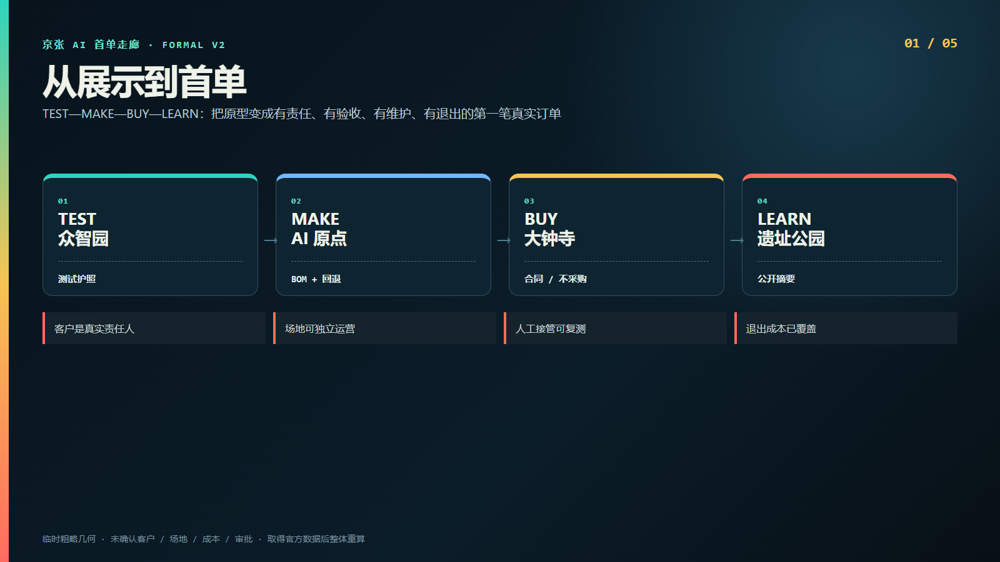
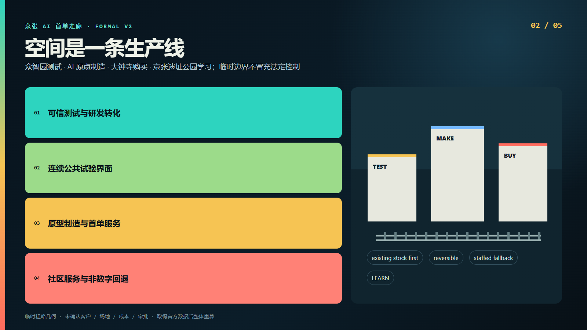
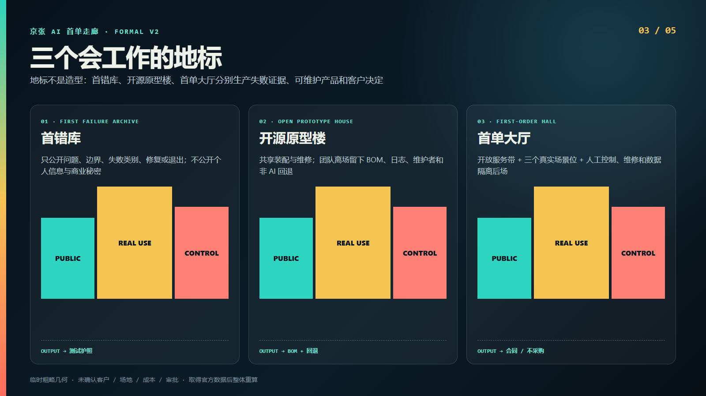
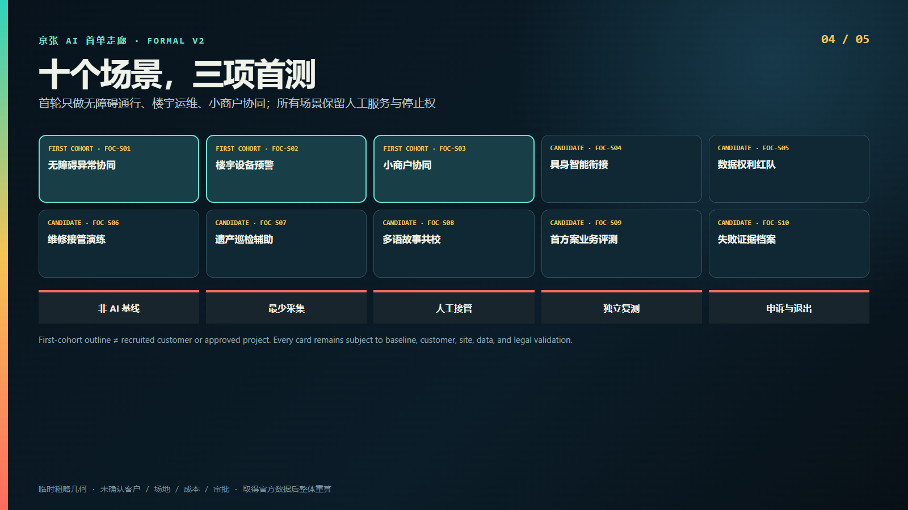
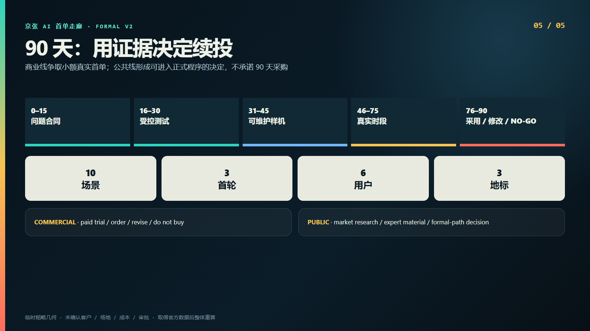

京张 AI 首单走廊 · FORMAL V2
从展示到首单
TEST—MAKE—BUY—LEARN：把原型变成有责任、有验收、有维护、有退出的第一笔真实订单
English




结构化审查索引
总览地图三层范围重点区域用地分区交通慢行蓝绿公共空间建筑更新项目AI 场景核心指标任务覆盖自检状态来源假设
临时几何复算指标
site_area_sqm11412825.386
green_ratio0.123423
public_space_ratio0.073281
临时粗略几何 · 未确认客户 / 场地 / 成本 / 审批 · 取得官方数据后整体重算